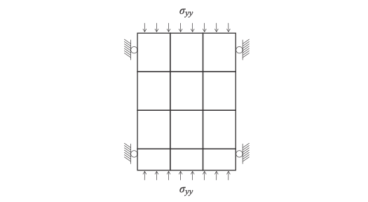
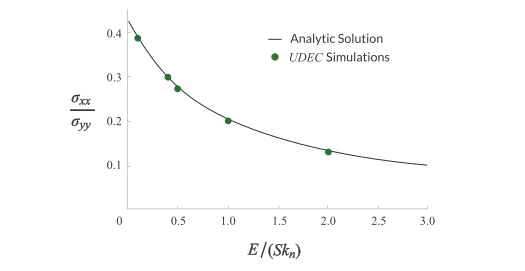
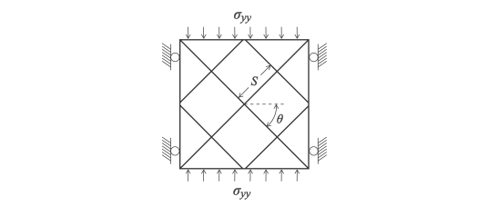
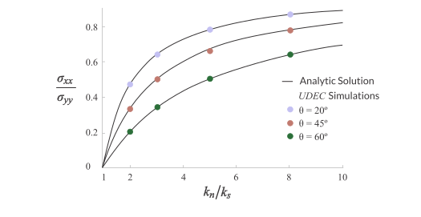
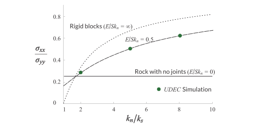

刚性与可变形块体的比较
进行非连续介质分析时，一项重要考虑是采用刚性还是可变形块体表示完整材料的行为。本节讨论二者的选择。如果需要可变形块体分析，可以选用多种模型模拟块体变形性，详见本构模型的选择（Choice of Constitutive Model）。
如理论与背景（Theory and Background）所述，早期离散元程序假设块体为刚性。然而，计入块体可变形性的重要性已逐渐得到认识，特别是在地下洞室稳定性分析和埋地结构地震响应研究中。离散元分析中考虑块体可变形性最明显的原因之一，是需要表示受约束岩体的“泊松比效应”。
泊松效应
岩石力学问题通常对所选岩体泊松比非常敏感。这是因为节理和完整岩石均对应力压力敏感，其破坏准则是围压的函数，例如莫尔—库仑准则。捕捉节理岩体真实的泊松行为，对于有意义的数值模拟至关重要。
岩体的有效泊松比包含两部分：节理引起的分量，以及完整岩石弹性属性引起的分量。除浅部或低围压情况外，完整岩石的可压缩性对岩体整体可压缩性贡献很大。因此，完整岩石的泊松比对节理岩体泊松比有显著影响。
严格而言，单一泊松比 \(\nu\) 仅适用于各向同性弹性材料。然而，只有少数节理分布型式会使岩体具有各向同性弹性属性。因此，定义一种可用于讨论各向异性材料的“泊松效应”会比较方便。
注意
以下讨论假定二维平面应变条件，\(y\) 为竖直方向。
将泊松效应定义为：在竖直方向施加载荷、同时水平方向不允许产生应变时，水平应力与竖直应力的比值；假定平面应变条件。例如，各向同性弹性材料的泊松效应为
考虑下图竖直节理分布所产生的泊松效应。如果采用刚性块体模拟这些节理，施加竖直应力后将完全不产生水平应力。这显然不现实，因为忽略了完整岩石泊松比所产生的水平应力。

图 1：具有竖直和水平节理的岩石泊松效应模型
节理与完整岩石以串联方式共同作用。换言之，作用于节理和岩石的应力相同。节理岩体总应变，是节理产生的应变与岩石可压缩性产生的应变之和。将节理和完整岩石的柔度相加，可推导岩体整体弹性属性：
如果将完整岩石模拟为各向同性弹性材料，其柔度矩阵为
节理引起的柔度矩阵为
其中，\(S\) 为节理间距，\(k_n\) 为节理法向刚度。
若式 (2) 中 \(\epsilon_{xx}\) = 0，则
其中，\(C^{(total)} = C^{(rock)} + C^{(jointing)}\)。
因此，岩体整体的泊松效应为
下图将式 (6) 绘制为比值 \(E/(Sk_n)\) 的函数，同时绘出为验证公式而运行的若干二维 UDEC 模拟结果。比值 \(E/(Sk_n)\) 用于衡量完整岩石相对于节理的刚度。当 \(E/(Sk_n)\) 较低时，岩体泊松效应由完整岩石的弹性属性主导；当 \(E/(Sk_n)\) 较高时，泊松效应由节理主导。
现在考虑不同倾角节理产生的泊松效应。泊松效应是节理方位和弹性属性的函数。考虑图 3（Figure 3） 所示特殊情况：岩体包含两组等间距节理，与水平面成 \(θ\) 倾角。节理弹性属性包括法向刚度 \(k_n\) 和剪切刚度 \(k_s\)。假定完整岩石块体完全刚性。

图 2：竖直节理岩体的泊松效应（完整岩石 \(ν\) = 0.3）
其中，\(S\) 为节理间距，\(k_n\) 为节理法向刚度。

图 3：节理相对水平面倾角为 \(θ\)、间距为 \(S\) 的岩石泊松效应模型
这种节理分布的泊松效应为
下图以若干 \(θ\) 值图示该公式，同时给出采用 UDEC 进行数值模拟的结果。UDEC 模拟结果与式 (7) 高度一致。

图 4：不同节理倾角下节理岩体的泊松效应（块体为刚性）
式 (7) 说明，数值模型必须采用合理的节理剪切刚度。剪切刚度与法向刚度之比，会显著影响岩体的泊松响应。如果剪切刚度等于法向刚度，泊松效应为零。对于较合理的 \(k_n/k_s\) 值 2.0 至 10.0，泊松效应相当高，最高可达 0.9。
接下来，针对 θ = 45º 的情况，研究完整岩石弹性属性的贡献。沿用竖直节理情况的分析，将完整岩石视为各向同性弹性材料。通过叠加节理与完整岩石的柔度，推导岩体整体弹性属性。
两组等间距、倾角为 45º 的节理产生的柔度矩阵为
因此，岩体整体的泊松效应为
对于 \(ν\) = 0.2 的情况，按若干比值 \(E/(Sk_n)\) 绘制式 (9)（见下图），同时绘出 UDEC 模拟结果。当 \(E/(Sk_n)\) 较低时，岩体泊松效应由完整岩石的弹性属性主导；当 \(E/(Sk_n)\) 较高时，泊松效应由节理主导。

图 5：含两组等间距、θ = 45◦ 节理的岩石泊松效应（块体可变形，ν = 0.2）
| 这些内容对您有帮助吗？… 版权与免责声明 | FLAC3D © 2019, Itasca | 原文更新于 2020 年 10 月 8 日 |